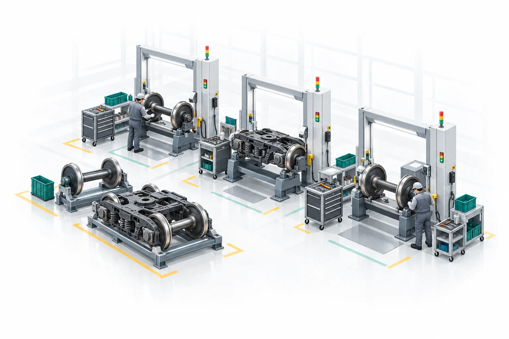

SCIP-OJ · 课程教学
课程教学
加入班级，完成建模作业，查看评测反馈。
教学流程
从建模练习到正式作业。
- 阅读题目输入输出、约束与作业要求
- 建模调试课程 Notebook 与本地练习
- 提交作业按当前班级要求正式提交
- 查看反馈成绩、报告与历史记录
PySCIPOpt 课程实验
与课程题目配套的建模实验。
先在 Notebook 验证模型，再回到课程作业提交代码。
作业说明
练习用于调试，正式提交记录成绩。
提交记录
查看自己的正式提交与评测反馈；本地练习不会写入正式成绩。
课程作业
按课程要求完成建模、练习与正式提交。当前共 — 道题。
选择一道建模题
正在加载题目索引…
← 返回在线题库
solve(instance) → dict
PYTHON
左侧阅读题目与约束，右侧编写、练习和提交求解代码。
评测与评分说明先确保模型可执行，再比较可行性与解质量；正式成绩以服务端为准
01 · 自定义测试
用自己的 JSON 实例检查 solve(instance) 的输入输出。这只是调试，不产生课程分数。
02 · 浏览器练习
即时反馈仅作学习参考，浏览器运行环境不等于服务端 PySCIPOpt 环境，不能据此认定正式通过。
03 · 正式提交
服务端使用隔离的真实求解器与未公开测试实例，验证接口、可行性和目标值，记录成绩与评测证据。
课程通过线与最终计分策略以当前作业信息栏为准。成绩不是代码行数或运行按钮次数；求解器耗时也不单独决定模型质量。
02 / 编写与验证
草稿自动保存在此浏览器；正式成绩以提交记录为准
自定义实例 JSON 练习专用 · 不计算正式分
提交记录
我的正式提交记录
正式成绩以服务端自动评测记录为准。
正在加载历史提交记录...
拓展学习
从开放案例出发，探索仿真与优化建模。
IE-DES-01 · 合成教学数据
从检修排队开始，
完成一次完整实验
比较 2 个与 3 个工位的等待差，保留每次重复的实验记录。
- 1定义系统明确对象、参数与假设
- 2运行实验设置方案并进行仿真
- 3核验结果查看并对比实验记录
- 4解释决策分析现象并给出结论

接下来可以探索
在不同的系统场景中，体验建模、仿真与决策分析的全过程。
随机库存与服务水平
定期检查补货 · 成本与服务率
双工序生产线与缓冲
阻塞 · 在制品 · 吞吐量
优化建模 Notebook
四个进阶模型，配有独立小规模真值校验。
开放学习资源不自动计入课程成绩。